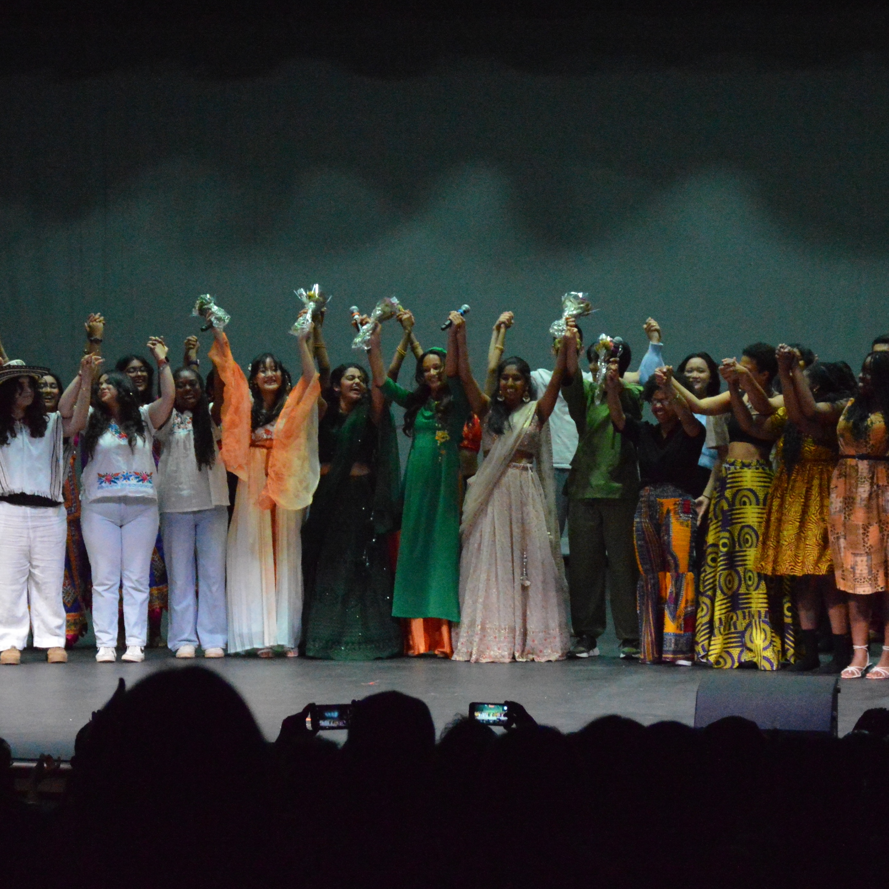
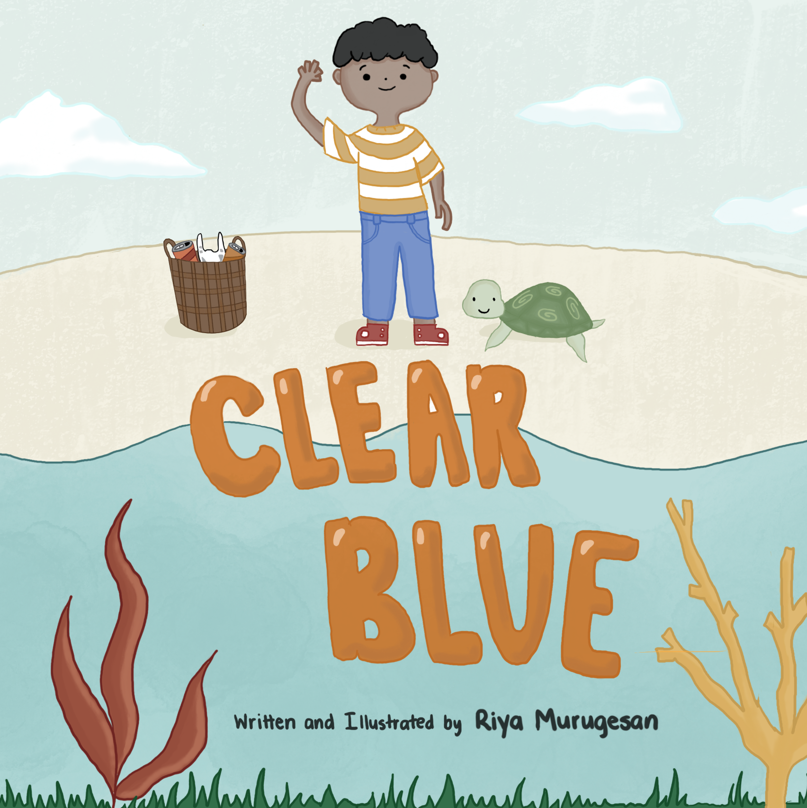

Developed a NetLogo simulation to model dandelion life cycle and spread over 1, 3, 6, and 12 months.
Compared the ecological impact of dandelions, sunflowers, and roses in a controlled simulation.

Asiafest: The Next Level
Organized a showcase highlighting Asian excellence and unity with 200+ performers and 15+ acts. Sold out a 650-seat auditorium.

Clear Blue
Authored and illustrated a sustainability-themed children’s book promoting environmental awareness.Earned 1st place at the Technology Student Association State Conference and 6th place at Nationals.